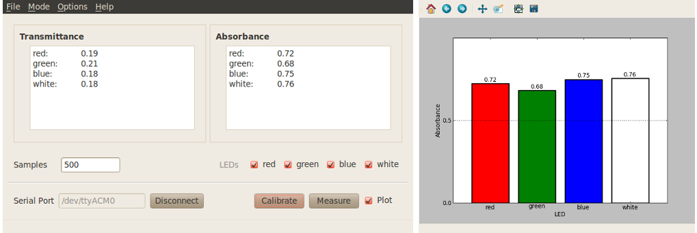

Colorimeter basic program¶
This program reports the Transmittance and Absorbance measured by the colorimeter for the wavelength(s) of light selected by the user. For an example of a lab using this program see Lab 1: Introduction to Colorimetry.

Procedure: Connect-Calibrate-Measure¶
Refer to the screenshots below for clarification of steps.
- With the basic program window open enter the serial port corresponding to your device in the program window and click on the “Connect” button in the lower left-hand side.
- Calibrate sensor. Place a cuvette with your ‘blank’ measurement (e.g. water) inside the colorimeter and click “Calibrate”. The data tables will display a value of 1.00 for Transmittance and 0.00 for Absorbance on all color channels. See Calibrating the colorimeter for more information.
- Place a cuvette containing your sample inside the colorimeter and click “Measure”. The Transmittance and Absorbance tables will display the measurements corresponding to the selected color channels. In addition, a second window will automatically open, displaying a bar graph of the measurements.
Additional software features¶
See Software features for more information on these features.
- Custom wavelengths.
- Save data at any point after calibration using the “File -> Save” menu item at the top of the program window.
- Plot on/off. Use checkbox to display or hide plotted data.
- LED on/off. Use checkbox next to each led to deselect one or more of the leds at any time after calibration. The program will display values only for the selected color channels.
- Change sample rate.